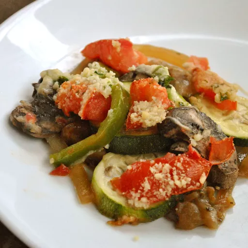

Home
Ratatouille Recipe

Description
This recipe is the best recipe of all time. If you want to eat some delicious ratatouille, make this one! This recipe has been in my family for 5 generations. It all started when my Great Great Grandma travelled to France and discovered her love for french cuisine. She learned this recipe from a chef in Paris and used that same recipe to make my Great Great Grandpa fall in love with her. In my house we call this recipe "Marry Me Ratatouille" because of our family history. This is the same recipe I will be teaching you how to make today.
Ingredients
- Eggplant
- Onion
- Bell Peppers
- Zucchini
- Yellow Squash
- Tomato Paste
- Olive Oil
- Parmesan Cheese
- Salt
- Pepper
Steps
- First cut your eggplant into one inch cubes. Put into a pot with olive oil, salt, and pepper on medium heat. Cover.
- Cut up your pepper. Put into a pan with olive oil, salt, and pepper on medium heat.
- Slice your squash and zucchini into rounds. Put into another pan with olive oil, salt, and pepper on medium heat.
- Cut up your onion. Put into another pan with olive oil, salt, and pepper on medium heat.
- Once everything is browned and cooked through, add to the ratarouille pot. The browning process should take about 20 minutes.
- Add a can of tomato paste.
- Once everything is combined, grate some fresh parmesan on top and broil in the oven for a few more minutes until the parmesan is browned.
- Remove and enjoy!